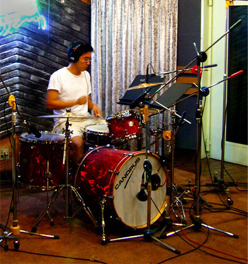

Hey! 😁Nice to meet you. I’m Kevin. 👋 I’m a Boston-based designer that helps companies design and iterate on products and interactive experiences for people. My design process emphasizes talking to users and rapid prototyping to figure out what a product should solve. I believe that relentlessly focusing on understanding users will lead to delightful experiences that also improve the bottom line. |
| My Experience |
|---|
|
I was previously at Hudl as a product designer. Hudl builds video analysis and stat tools for over 3.5 million pro and amateur coaches and athletes worldwide. I led the product design for Hudl Messaging, a strategic feature that allows coaches and athletes to communicate via the iOS, Android and web products. I came to Hudl through the acquisition of Ubersense (now Hudl Technique), a company that built slow-motion video analysis tools. The apps have been downloaded over 4 million times worldwide and have been endorsed by the US Olympic Bobsled team. I worked on new features touching all parts of the iOS and Android apps and web video player. Some examples include improving the nitty-gritty slow-motion player UI to helping define the experience of the Ubersense Community, a part of the app that allows coaches and athletes to publicly share their videos for feedback. Before Ubersense I was part of the 2013 Techstars Boston class as a dev/design consultant. I got connected with Techstars after attending the 2012 Fall class of Startup Institute. During this eight-week bootcamp, I supplemented my front-end dev skills by learning the basics of Ruby on Rails and Backbone JS. I expanded this knowledge by working with Symphony Church to design and build an informational website and a Rails app that helps the staff connect with congregation members. I started my career as a front-end developer at Warschawski, a full-service digital marketing agency in Baltimore, MD. |
| A bit more about me |
|---|
|
 I enjoy playing the drums and running. Currently reading: Send me an email! |